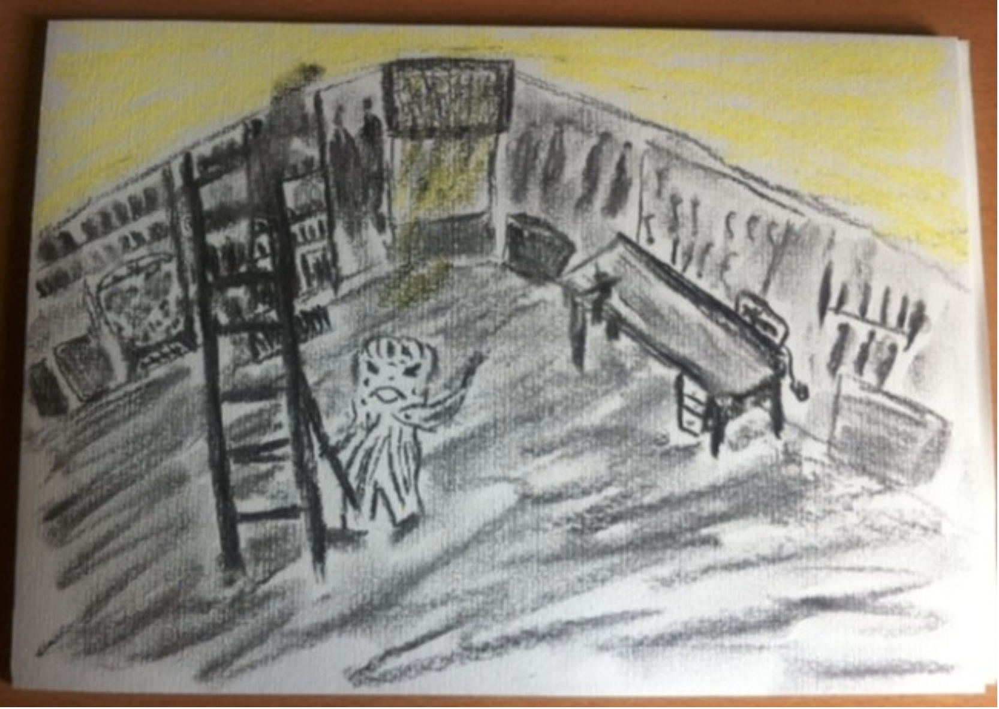

Den Alarmzustand beenden, indem wir den emotionalen Ursprung finden und neutralisieren.
Wenn das Herz rast oder die Luft knapp wird, ohne dass ein organischer Befund vorliegt, ist das oft ein „Fehlalarm" des Unterbewusstseins. Mit der Auflösenden Hypnose finden wir die angestauten Emotionen hinter der Angst und lassen sie kontrolliert abfließen. So kann Ihr Nervensystem wieder zur Ruhe kommen.
Die Behandlung von Ängsten ist mit das Beste, was die Hypnosetherapie zu bieten hat. Ich erkläre, wieso Hypnose hier so gut funktioniert: Ängste sind Gefühle und werden über das limbische System im Gehirn aktiviert. Ängste sind über unser Bewusstsein nicht steuerbar. Ein Spinnenphobiker z.B. weiß, dass die Spinne ungefährlich ist, kann dennoch das Angstgefühl nicht loswerden, auch wenn er sich einredet, dass die Spinne ungefährlich ist. Aus diesem Grund sind Ängste durch die normale Gesprächstherapie kaum zu beeinflussen.
Mehr erfahrenWie funktioniert die Hypnose bei Ängsten? Sie funktioniert so, dass das Angstgefühl in der Hypnose reproduziert wird. Die Patienten reagieren dann heftig ab, erleben die Angst aber im sicheren Rahmen der Behandlung, bis die Angst langsam abebbt. Nach wenigen Behandlungen merkt man dann, dass das Angstgefühl in der Hypnose nicht mehr auslösbar ist und die Patienten berichten, dass die Ängste in den typischen Situationen nicht mehr auftreten. Oft bemerken Patienten auch bei Behandlung einer Angst (beispielsweise Angst beim Autofahren), dass sich ganz nebenbei andere Ängste (Angst im Fahrstuhl) gelindert haben und verschwunden sind.
Ich habe zwei möglich Erklärungen dafür:
1) bei der Elimination von bestimmten angstauslösenden Gefühlen durch Abreaktionen werden Nervenspezialisierungen aufgelöst, die für die Vermittlung mehrerer Ängste verantwortlich sind. Die Informationen für verschiedene Ängste sitzen in verschiedenen Bereichen, werden aber durch dieselben Knotenpunkte (Hirnnervenspezialsierungen) weitergegeben, diese Knotenpunkte werden durch die Abreaktionen in der Trance neu arrangiert/neutralisiert.
2) Durch Abreaktionen in der Hypnose werden angstauslösende Informationen im Gehirn gelöscht und dadurch sinkt das Gesamtniveau der Angst (weniger schnell erregbare Nervenzellen); Reize müssen wieder stärker werden, um entsprechende biochemische Signale weiterzuleiten und unterschwellige Reize werden zu schwach, um Angstreaktionen auszulösen. Beide Mechanismen wären sich relativ ähnlich, nur dass die Lokalisation der Veränderung eine andere wäre.

Dieses Bild schickte mir eine Patientin nach einer Hypnose-Sitzung.
Es gibt den Inhalt unserer Hypnose- Sitzung anschaulich wieder. Die Patientin war unter anderem wegen hartnäckiger Ängste zu mir gekommen. In der Hypnose tauchte auf einmal der Kellerraum auf, in den ihre Mutter sie einmal als Kind eingesperrt hatte, als diese außer Haus gegangen war. Das hatte bei der Patientin damals eine starke Angst ausgelöst, die sich bis in das Erwachsenenalter aufrecht erhalten hatte bis wir diese in der Hypnose auflösen konnten. Wenn man das Bild genau betrachtet, dann sieht man bereits die hellen Anteile am oberen Bildrand. Interessanterweise sieht man bei der auflösenden Hypnose häufig in der Trance dunkel- hell Abfolgen. Es gilt die Regel: wenn es hell wird, hat sich das negative Gefühl aufgelöst und die innere Wahrnehmung wird positiv.
Phobien sind konkrete Ängste, die bei Auftreten eines Reizes ausgelöst werden. Als Auslöseursachen kommen verschiedene Umweltreize Menschen, Tiere, oder Situationen in Betracht. Die Betroffenen fühlen sich meist kurzatmig, bekommen Herzrasen, Schweißausbrüche und Bauchschmerzen wenn Sie mit dem Reiz konfrontiert werden. Oft kommt es zu einer deutlichen Beeinträchtigung der Lebensqualität, weil die Betroffenen versuchen, die auslösenden Reize zu vermeiden und sich sozial zurückziehen.
Phobien können unterschieden werden in einfache und komplexe Formen. Die einfachen Formen werden durch eine symptomorientierte Therapie behandelt. Die komplexen (erlernten) Phobien treten auf, wenn mit dem Reiz bestimmte negative Erfahrungen gemacht wurden. Da diese Erfahrungen oft im frühkindlichen Alter geschehen, werden sie oft nicht erinnerlicht und können gut in Trance behandelt werden. Weiterhin können Phobien auch als Abwehrmechanismus für eine andere zugrunde liegende Problematik auftreten, in diesen Fällen hat sich die analytisch aufdeckende Hypnotherapie als wirksam erwiesen.
Die soziale Phobie ist eine Angsterkrankung die meist vor dem Hintergrund von Selbstwertproblemen entsteht. Auch wenn für Menschen mit einer sozialen Phobie meist der erschwerte Umgang mit anderen Menschen im Vordergrund der Wahrnehmung steht, geht es meist um tieferliegende verletzte Gefühle.
Mehr erfahrenInteressanterweise reagieren Menschen mit sozialer Phobie mit einer Aktivierung des Angstsystems im Gehirn, sobald sie in Kontakt mit anderen Menschen kommen. Es kommt zu Schweißausbrüchen (Dyshidrose), Erröten bzw. Angst vor dem Erröten (Erythrophobie) und anderen typischen Angstsymptomen. Bei Menschen mit sozialer Phobie haben durch Mitmenschen ausgelöste negative Gefühle zu einer Konditionierung geführt. Soziale Interaktionen und Menschen sind der auslösende Reiz für die Angst, dementsprechend vermeiden die Betroffenen meist Sozialkontakte, was die Problematik verschärft.
Oft finden sich im Lebenslauf von Menschen mit sozialer Phobie Ursachen für Selbstwertprobleme und die damit verbundenen Ängste, z.B. Ablehnung durch die Eltern, oder zumindest einen Elternteil. Häufiger auch Ausgrenzungen und Demütigungen in der Schule oder später im Job. Insbesondere die Ablehnung durch die Eltern ist oft der Grundstein für die soziale Phobie. Menschen, die von den Eltern abgelehnt wurden, reagieren meist sehr feinfühlig auf potentielle weitere Ablehnungen, wie sie beispielsweise in der Schulzeit an der Tagesordnung sind. Während emotional stabile Kinder mit einem gesunden Elternhaus potentielle Kränkungen gut wegstecken, hinterlassen oft objektiv triviale Momente (Auslachen, etc.) subjektiv bei Kindern, die bereits Ablehnung erfahren haben, deutliche Spuren und sorgen für eine Verstärkung von Ablehnungsängsten und Selbstwertproblemen. Dies ist ein klassischer Werdegang von einem Patienten mit sozialer Phobie, wobei allerlei Variationen möglich sind. Kern des Problems ist jedoch meist ein in der Kindheit entstandenes Ablehnungsgefühl auf dem sich die soziale Phobie aufbaut.
Die gute Nachricht ist die, dass sich soziale Phobien wie alle konditionierten Ängsten mit Hypnose sehr gut behandeln lassen. Die Behandlung besteht aus einer Mischung einer auflösenden und konfrontativen Hypnosetherapie. Da die Betroffenen wegen ihrer Vermeidungsstrategien meist über größere Zeiträume hinweg versäumt haben, normale soziale Erfahrungen zu sammeln, heißt es nach dem Auflösen der Ängste und dem Heranwachsen eines gesunden Selbstwertgefühles: sozial aktiver werden, Menschen kennenlernen und das Versäumte nachholen. Das kostet zwar etwas Überwindung, aber es lohnt sich.
An der Panikstörung leiden 3-4 % der Bevölkerung. Der Erkrankungsbeginn liegt meist zwischen dem 20-30 Lebensjahr und ist tritt oft in Verbindung mit Agoraphobie, der Angst vor dem Aufenthalt in der Öffentlichkeit, auf. Panikattacken sind meist unvorhergesehen auftretende Anfälle von Panik, die mit Herzrasen, Schwitzen und Todesangst oder Angst verrückt zu werden einhergehen. Die Betroffenen haben keine Kontrolle über die Attacken und die Symptomatik wird als sehr belastend erlebt. In diesem Rahmen entsteht auch die Phobophobie, die Angst vor dem Auftreten der Angst.
Oft folgt ein sozialer Rückzug, um dem Auftreten der Attacken in der Öffentlichkeit zu entgehen. Dieses Verhalten hat wiederum Auswirkungen auf die Familie und Partnerschaften.
Bei generalisierten Angststörungen werden verschiedenste Reize als angstauslösend erlebt. Typisch sind über einen längeren Zeitraum auftretende Angstzustände, die mit einer erhöhten Wachsamkeit, Anspannung und Übererregbarkeit einhergehen.
Mehr erfahrenDas Führen eines normalen Lebens ist bei generalisierten Angststörungen erheblich erschwert bzw. unmöglich. Durch die Hypnoanalyse können die zugrunde liegenden Konflikte gelöst werden. Wichtig ist hierbei nicht nur ein Aufdecken des Problems, sondern eine Lösung mit Hilfe des Therapeuten. Durch das Lösen der unbewussten Konflikte der Vergangenheit wird die Gegenwart verändert. Es beheben sich die Symptome und die Angstzustände können verschwinden.